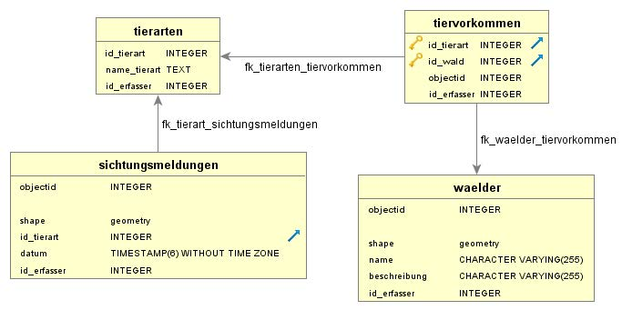

Arbeiten mit Server Datenbanken in ArcGIS Pro und pgAdmin
Übung 2: Datenbankverbindung zum Server in pgAdmin herstellen
In den nächsten Übungen wollen wir eine Beispiel Datenbank mit dem dort bereits implementierten Datenbankmodell abfragen. Hierzu müssen wir in einem ersten Schritt eine Verbindung zum PostgreSQL/PostGIS Datenbankserver herstellen. Hierfür nutzen wir das Datenbank-Administrations-Werkzeug pgAdmin.
- Starten Sie pgAdmin.
- Im Dashboard klicken Sie auf NEW Server und geben die folgenden Verbindungsparameter ein:
- Register General: Name: svma-s-01323_waelder_studentNr. Verwenden Sie dabei die Nr. Ihres zugewiesenen Benutzers (siehe Abbildung 9.1)
- Register Connection (siehe Abbildung 9.2):
- Host name/address: svma-s-01323.zhaw.ch
- Port: 5432
- Maintenance database: waelder
- Username: studentNr (Verwenden Sie hier Ihren zugewiesenen Anmeldenamen)
- Passwort: (Verwenden Sie hier Ihr zugewiesenes Passwort)
- Alle anderen Einstellungen können belassen werden. Speichern Sie mit Klick auf Save.
- Lassen Sie sich nicht davon verunsichern, dass es bereits einige Einträge hat. Da auf dem Server bereits andere Datenbanken installiert sind, sehen Sie auch diese. Navigieren Sie zu unserer Datenbank “waelder” und verschaffen sich einen Überblick über die vorhandenen Tabellen.
- Verwenden Sie für alle folgenden Übungen diese Datenbankverbindung, wenn nichts anderes angegeben ist (siehe Abbildung 9.2).
Übung 3: Verbindung zur PostgreSQL/PostGIS Datenbank mit ArcGIS Pro herstellen
Nachdem die Datenbank erstellt wurde und eine Verbindung über pgadmin eingerichtet wurde, benötigen wir auch eine Verbindung von ArcGIS Pro zu der Datenbank.
- Starten Sie ArcGIS Pro und erstellen ein neues Projekt mit dem Namen “Datenbankzugriff”
- Öffnen Sie das Catalog-Fenster oder das Register Catalog und wählen Sie “Databases” (siehe Abbildung 9.3).
- Im Kontextmenü (rechte Maustaste) kann eine neue Datenbankverbindung zur Server Datenbank hergestellt werden.
- Databases→Kontextmenü→New Database Connection
- Geben Sie im Database Connection Fenster die notwendigen Verbindungsparameter ein (siehe Abbildung 9.4).
- Database Platform: PostgreSQL
- Instance: svma-s-01323.zhaw.ch
- Authentication Type: Database authentication
- User Name: studentNr (Verwenden Sie hier Ihren zugewiesenen Anmeldenamen)
- Password: (Verwenden Sie hier Ihr zugewiesenes Passwort)
- Database: waelder
- Ein Klick auf OK stellt die Verbindung zur Datenbank her.
- Sie können der Datenbankverbindung noch einen sinnvollen Namen geben. Es empfiehlt sich eine Kombination aus dem Servernamen, der verbundenen Datenbank und dem Benutzer. Z.B. “svma-s-01323_waelder_student1”
- Unter dem Eintrag “Databases” im Catalog gibt es jetzt eine neue Datenbankverbindung zur Datenbank (siehe Abbildung 9.5).
Übung 4: Datenbank Schemata für ArcGIS Pro Benutzer
Nachdem die Datenbank erstellt wurde und alle Verbindungen eingerichtet sind, ist die Datenbank startklar. ArcGIS pro nutzt für die Daten jeweils ein eigenes Schema. Das Schema hat dabei den Namen des Datenbank Admin Users.
- Nutzen Sie wieder die Verbindung mit der Datenbank “waelder” in pgAdmin und öffnen Sie die Inhalte/Eigenschaften mit Klick auf den kleinen Pfeil.
- Navigieren Sie zum Eintrag Schemas. Dort sind 4 Einträge zu sehen. Ein Schema ist eine Art abgeschlossener Namensraum für die Datenhaltung. Es empfiehlt sich thematisch zusammenpassende Tabellen in einem gemeinsamen Schema zu speichern. Für die meisten Datenbank-Anwendungen genügt es aber alle Tabellen im default Schema “public” zu erstellen. Für den Zugriff über ArcGIS wurde aber durch das Werkzeug “Create Database User” ein spezielles Schema mit dem Namen des Database Users erstellt. Dies ist notwendig damit auch ArcGIS Pro auf die Daten zugreifen und diese verwalten kann. Das entsprechende Schema bekommt dabei immer den Namen des Admin Datenbankbenutzers. In diesem Fall “arcgispro_editor”. Sie können dort z.B. auch ein Schema mit Namen “sde” vom Geodatenbank-Administrator sehen (siehe Abbildung 9.6).
- Öffnen Sie das public Schema. Hier gibt es bereits Einträge. Hier werden die zugehörigen Informationen der Datenbank, wie Sichten, Funktionen usw. zugänglich gemacht. Interessant ist zunächst aber nur der Eintrag “Tables (3)”. In Klammern ist immer die Anzahl der vorhandenen Datenbanktabellen angegeben. Wie wir sehen, gibt es default-Tabellen, welche bereits erstellt wurden. Die Tabelle “spatial_ref_sys” enthält z.B. alle Koordinatensysteme. Die Tabelle “sde_spatial_references” ist eine Hilfstabelle für Koordinatensysteme von ArcGIS Pro. Löschen Sie diese beiden Tabellen NIEMALS. Ohne diese Tabellen sind bestimmte Funktionen nicht mehr ausführbar (siehe Abbildung 9.7)
Der Name des Schemas muss in zukünftigen Abfragen immer dem Tabellennamen vorangestellt werden, damit klar ist aus welchem Schema abgefragt werden soll.
Falls Sie einmal eigene Tabellen erstellen sollten: Es empfiehlt sich alle räumlichen Tabellen direkt in ArcGIS Pro zu erstellen. Dadurch entscheidet ArcGIS Pro selbstständig über die korrekten Datentypen und Geometrietypen. Alle anderen Tabellen sowie Fremdschlüssel usw. können auch in pgadmin erstellt werden. Alle Tabellen wurden im ArcGIS Pro Schema “arcgispro_editor” erstellt.
Übung 5: Datenbankschema prüfen
Für die kommenden Übungen nutzen wir die Datenbank “waelder” auf unserem Server. Den Zugriff haben wir in den vorigen Übungen eingerichtet. Um einen Überblick zu bekommen, lesen Sie das folgende Datenbankschema und machen sich mit den Tabellen, Attributen und Abhängigkeiten vertraut. Da Sie jetzt alle gemeinsam dieselben Tabellen bearbeiten, gibt es in jeder Tabelle jeweils ein Feld “id_erfasser”. Sobald Sie Tabellen mit Daten befüllen, schreiben Sie bitte immer jeweils Ihre studentNr in das Feld “id_erfasser”, damit die Einträge später unterscheidbar sind.

Übung 6: Datenimport in die Datenbank über pgAdmin
Da jetzt alle Tabellen vorliegen sollen diese noch mit ein paar Beispiel-Daten gefüllt werden. Auch hier bietet es sich an räumliche Objekte (Geometrien) mit Hilfe von ArcGIS Pro zu erfassen. Nicht-räumliche Objekte können meist sogar schneller über SQL importiert werden.
- Suchen Sie in der Datenbank “waelder” das schema “arcgispro_editor”.
- Öffnen Sie anschliessend den SQL Editor von pgadmin. Sie finden das so genannte Query Tool im Kontextmenü des Schemas oder in der Menüleiste oben unter Tools→Query Tool
- Importieren Sie mit Hilfe eines SQL Statements eine Tierart in die Tabelle “tierarten”.
- Da Sie jetzt alle gemeinsam und gleichzeitig Daten in dieselbe Tabelle einfüllen und Sie die Einträge noch unterscheiden wollen, fügen Sie unter id_erfasser jeweils ihre zugewiesene studentNr (nur die Zahl) ein.
- Benutzen Sie dazu das INSERT Statement und tippen es in das Query Tool (siehe Abbildung 9.8)
INSERT INTO arcgispro_editor.tierarten (id_tierart, name_tierart, id_erfasser) Values (DEFAULT, 'Bär', studentNr);- Schliessen Sie die Eingabe mit Klick auf Execute ab.
DEFAULT ist ein SQL Befehlswort, welches den Zähler für die id_tierart automatisch auf den nächsten freien Wert setzt. So kann die id_tierart automatisch fortlaufend hochnummeriert werden. Sie dürfen gern ein eigenes Tier in die Datenbank einfüllen.
Achten Sie darauf, dass Text immer in einfache Anführungszeichen (Das Zeichen auf der ?- Taste) gesetzt werden muss. Bei Copy & Paste aus Dateien wird oft das Anführungszeichen verändert.Beachten Sie ausserdem die Punktschreibweise, dabei muss der Name des Schemas “arcgispro_editor” immer mit Punkt verbunden vor dem Namen der Tabelle angegeben werden. Jedes Statement wird mit Semikolon abgeschlossen.
- Lassen Sie sich den Inhalt der Tabelle ausgeben. Dies können Sie über ein SELECT SQL Statement ausführen (siehe Abbildung 9.9).
SELECT * FROM arcgispro_editor.tierarten;
- Sie können erkennen, dass ihr Tier mit Ihrer studentNr als id_erfasser in die Tabelle eingetragen wurde. Vermutlich sehen Sie auch bereits Einträge Ihrer Mit-Studierenden.
- Navigieren Sie im Object Explorer von pgAdmin zur Tabelle “tierarten”.
- Über das Kontextmenü können ebenfalls die Inhalte der Tabelle angezeigt werden (siehe Abbildung 9.10).
- Tabelle “tierarten”→Kontextmenü→View/Edit Data→All Rows
- Es öffnet sich automatisch das Query Tool und die Inhalte der Tabelle werden angezeigt.
Auf diese Weise kann immer nur die komplette Tabelle angezeigt werden. Filter oder sonstige Einschränkungen müssen als SQL Statement abgesetzt werden.
Übung 7: Datenimport in die Datenbank mit einer SQL-Datei
Jedes SQL Statement kann in einer Datei abgespeichert werden. Dadurch lassen sich bequem z.B. gleich mehrere Daten in die Datenbank einlesen.
- Bleiben Sie in der Datenbank “waelder” im schema “arcgispro_editor”.
- Öffnen Sie das Query Tool.
- Laden Sie die Datei “tierarten.sql” aus dem Moodle und speichern Sie in Ihrem Ordner.
- Öffnen Sie die Datei in einem beliebigen Texteditor und ändern das Wort “studentNr” in Ihre studentNr ab. Denken Sie sich ausserdem ein paar eigene/andere Tierarten aus und schreiben diese ebenfalls in die Datei (siehe Abbildung 9.11).
- Über das kleine Ordner Symbol (Im Menü des Query Tools links oben) kann eine SQL-Datei geladen werden. Laden Sie die geänderte “tierarten.sql” Datei in pgAdmin.
- Die Auswahl lädt den Inhalt der Datei ins Query Tool (siehe Abbildung 9.12).
- Schliessen Sie die Eingabe mit Klick auf Execute ab.
- Schauen Sie sich erneut den Inhalt der Tabelle “tierarten” an. Die Tabelle sollte jetzt die eigenen Tierarten plus ein paar Einträge Ihrer Mit-Studierenden enthalten.
Da der Primärschlüssel der Tabelle nur auf id_tierart gesetzt ist und wir alle zusammen auf derselben Tabelle arbeiten, gibt es einige Tierarten bestimmt doppelt. Das ist normal.
Übung 8: Geometrieimport in die Datenbank
Herkömmliche GIS Methoden zum Erstellen und Importieren von Geometrien ins GIS sollten Ihnen aus dem GIS Basic Modul bereits bekannt sein. Auch in ArcGIS Pro können Geometrien z.B. über ein Shapefile in eine Geodatenbank importiert werden. Ausserdem können Geometrien z.B. aus einem Luftbild digitalisiert und direkt in der Geodatenbank gespeichert werden.
- Laden Sie die Datei “waelder.zip” aus dem Moodle und entpacken Sie die Dateien. Es handelt sich um ein Shapefile mit einigen Wäldern.
- Starten Sie ArcGIS Pro und laden das Projekt “Datenbankzugriff”.
- Fügen Sie das Shapefile ein und erfassen Sie mit dem Digitalisierungsmöglichkeiten von ArcGIS Pro zusätzlich ein paar eigene fehlende Wälder.
- Öffnen Sie die Attributtabelle.
- Erfassen Sie im Feld “id_erfasser” wiederum Ihre zugewiesene studentNr (Nur die Zahl). Alle weiteren Attribute können Sie beliebig erfassen. Denken Sie sich einfach etwas aus.
- Importieren Sie die Daten anschliessend folgendermassen in die Feature Class “waelder” in der Datenbank auf dem Server.
- Kontextmenü der Feature Class “waelder”→Load Data. Es öffnet sich das Werkzeug “Append” (siehe Abbildung 9.13)
- Input Dataset: Shapefile “waelder”
- Target Dataset: waelder.arcgispro_editor.waelder
- Field Matching Type: Use the Field Map to reconcile schema differences. Shapefiles können nur Spaltenbezeichnungen mit 10 Zeichen speichern. Alles andere wird abgeschnitten. Das Attribut “beschreibung” ist deshalb in der Datenbank als “beschreibung” gespeichert, im Shapefile aber nur als “beschreibu”. Dies hat zur Folge, dass das Schema beider Feature Classes nicht gleich ist. Aus diesem Grund muss hier explizit die Übereinstimmung der Spalten bestimmt werden. Mit dem kleinen Stiftsymbol können Sie die Felder anpassen bzw. zuweisen. (siehe Abbildung 9.14) Das gleiche gilt für das Feld “id_erfasser” bzw. “id_erfasse” (siehe Abbildung 9.15).
- Erstellen Sie eine neue Karte in ArcGIS Pro und laden Sie die Feature Class “waelder” aus der Server Datenbank.
- Sie haben jetzt die Wälder in die Datenbank importiert.
- Schauen Sie sich die Wälder auch in pgAdmin an. Machen Sie hierzu eine Select Abfrage im Query Tool. In der Ergebnis Tabelle sehen Sie in der Geometry-Spalte ein kleines Karten-Symbol (View all Geometries in this column). Dies öffnet den “Geometry Viewer”. Sie sollten auch dort die Geometrien der importierten Wälder sehen (siehe Abbildung 9.16).
Da wir jetzt alle unsere Wälder in dieselbe Datenbank laden, sind natürlich einige Wälder doppelt vorhanden. Dies ist für unser Vorhaben aber nicht weiter schlimm.
Übung 9: Geometrieimport in die Datenbank mit SQL-Datei
Auch Geometrien können ebenso wie Sachdaten über eine SQL-Datei in die Datenbank kopiert werden.
- Laden Sie die Datei “sichtungsmeldungen.sql” aus dem Moodle. Es handelt sich um eine SQL-Datei mit Sichtungsmeldungen von Tieren.
- Öffnen Sie die Datei in einem beliebigen Texteditor. Was sehen Sie? Was fällt auf?
- Sie werden bemerken, dass die Geometrie über die Funktion ST_GeomFromText lesbar dargestellt werden kann. Der Geometrietyp von ArcGIS Pro wird dann über diese Funktion automatisch umgewandelt. I.d.R. ist es aber sehr viel einfacher Geometrien über ArcGIS Pro zu importieren oder zu erstellen. Sie sollen hier aber einmal sehen, dass es auch direkt über SQL geht.
- Die Attribute (Spalten in der DB) in der Datei sind Kommagetrennt in Klammern nach dem Wert VALUES. Die Reihenfolge ist diesselbe wie in der Klammer vor dem VALUES.
- Passen Sie die Datei an, indem Sie als objectid (erstes Attribut) ihre studentNr gefolgt von einer 0 eintragen und als id_erfasser (letztes Attribut) jeweils Ihre studentNr (Nur die Zahl ohne 0) eintragen. Denken Sie sich auch eine sinnvolle Schweizer-Koordinate in der Nähe der anderen Objekte aus, damit Sie nicht alle denselben Punkt importieren. Die Punkte dürfen, müssen aber nicht im Wald liegen. Variieren Sie etwas. Sie können eine Koordinate einfach im Map-Fenster von ArcGIS Pro ablesen und ebenfalls in der Datei anpassen. Es kommt jetzt hier nicht auf Genauigkeit der Lage des Punktes an. Über die id_tierart können Sie sich ein beliebiges Tier aussuchen. Tragen Sie eine vorhandene id_tierart aus Ihrer Tierarten Tabelle aus Übung 6 ein. Passen Sie zum Schluss auch noch das Datum an (siehe Abbildung 9.17).
- Starten Sie pgAdmin und laden die Datenbank “waelder” im Schema “arcgispro_editor”
- Importieren Sie die Sichtungsmeldung mit Hilfe der SQL-Datei in die Datenbank.
- Schauen Sie sich die Daten in pgadmin und in ArcGIS Pro an. Sie sollten einige Punkte in der Karte sehen (siehe Abbildung 9.18 und Abbildung 9.19).